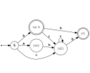

|
Paper List |
Recent Posts all posts

|
Citizen Science Projects |
Computer Science Jokes |
|
|
Bachelor Informatik, 1. Semester: Was bisher geschah |
|  |
Eine Sprache ist nicht regulär - Beweis mit dem Pumping-Lemma |
Konstruktion eines deterministischen endlichen Automaten aus einem nicht-deterministischem |
How to draw a finite-state machine |

|
Joke: Electrical Engineering vs. Computer Science |